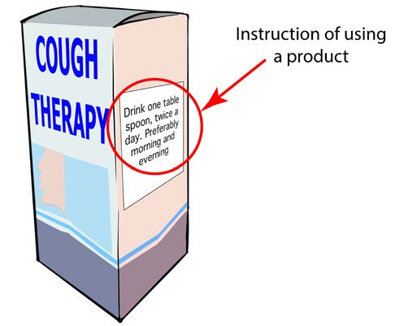
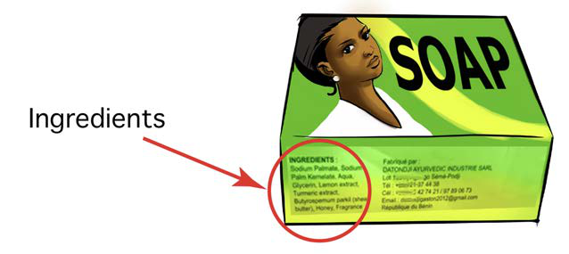

Ingredients of the product
Products contain various ingredients. It is important to know what is in a product to prevent health risks like allergies. Figure 19 shows example of ingredients in a product.

Storage methods
Storing products in the right way helps keeps them safe and healthy to use. It is important to follow storage instructions to avoid problems. This information is usually written on the package. Figure 20 shows storage instructions in a product.